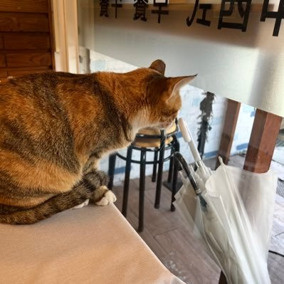

Жизнь — это движение.
@432Ifantrygroup
@hhchishu @Private_plot 你这个思维不对，我搬运一下我在知乎上写的文章。
“我们必须投入资源去保障女孩们能安全的走小路和夜路。有些人脑子里有种很简单的逻辑：夜间小路、酒吧、商K这些地方不安全，那只要国家把这些地方禁了/我不去这些地方就安全了。”

watch
@hhchishu
@Private_plot 不代表是一回事，会不会发生是另一回事。
就像拿奢侈品，首饰做例子。你住在治安不好的地方，非要背着奢侈品包包，穿金戴银，开着豪车出入，你不是最容易被小偷抢劫犯盯上的还是谁？